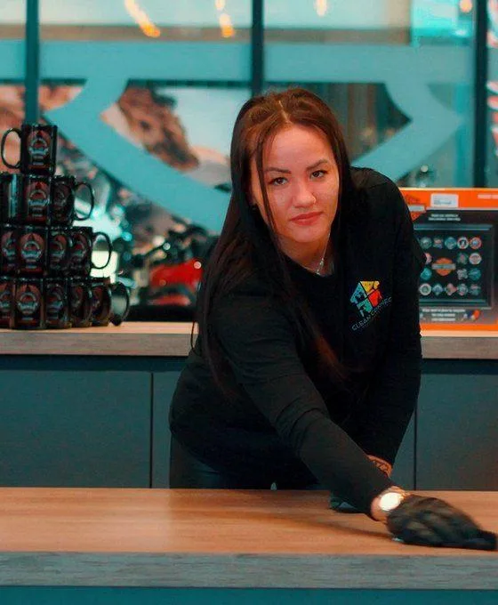

Unterhaltsreinigung in Brühl
Saubere Arbeitsplätze, gepflegte Sanitärräume und ein Empfang, der morgens wieder einladend aussieht: Die Unterhaltsreinigung in Brühl übernehmen wir zu festen Zeiten und mit einem festen Team.
Unterhaltsreinigung in Brühl: was vor Ort zählt
In Brühl gibt es neben dem Rathausumfeld viele Kanzleien, Praxen und Verwaltungsstandorte, darunter Bildungseinrichtungen des Bundes. Für die Unterhaltsreinigung legen wir deshalb Zeitfenster fest, die zu Ihren Öffnungszeiten passen, früh morgens, abends oder am Wochenende.
Pingsdorf, Badorf und Vochem sind gewachsene Wohnviertel mit vielen Mehrfamilienhäusern und kleineren Eigentümergemeinschaften. Auch dort, wo Büros und Praxen in Wohnhäusern liegen, achten wir auf leise Geräte und feste Zeiten, damit die Nachbarn nicht gestört werden.
Brühl liegt am Rand der Ville. Viele Grundstücke grenzen an Grünflächen und Parks, deren Laub im Herbst auf Wegen und Fensterbänken landet. Je nach Lage planen wir mehr Zeit für Eingänge und Böden ein, weil Straßenschmutz dort schneller hereingetragen wird.
Brühl liegt südwestlich von Köln an der A553. Aus Köln sind wir über die A4 und A553 oder über die Bonner Straße schnell dort.
Mehr über Brühl
Die Uhlstraße und die Fußgängerzone rund um den Markt ziehen viele Besucher an, auch Touristen auf dem Weg zum Schloss.
Im Gewerbegebiet Brühl-Ost sitzen Handwerksbetriebe, Händler und Logistik mit Hallen und Lagerflächen.

Darauf können Sie sich in Brühl verlassen
Feste Ansprechperson
Ein Kontakt für Fragen, Wünsche und Änderungen, keine Hotline.
Reinigung nach Leistungsverzeichnis
Was wann gereinigt wird, steht schriftlich fest und ist für beide Seiten nachprüfbar.
Vertretung bei Ausfall
Fällt jemand aus, springt ein eingearbeitetes Teammitglied ein.
Transparenter Stundensatz
32 € netto pro Stunde, der Stundenumfang wird für Ihr Objekt fest vereinbart.
Leistungsumfang
- Arbeitsplätze und Oberflächen
- Böden saugen und wischen
- Sanitärräume und Küchen
- Papierkörbe leeren und Müll trennen
- Türen, Griffe und Lichtschalter
- Eingangsbereiche und Treppen
So läuft es ab
- Kostenlose Begehung vor Ort
- Leistungsverzeichnis mit Intervallen
- Festes Angebot nach Stundenumfang
- Start mit Einweisung des Teams
- Regelmäßige Qualitätskontrolle
Rechner: Unterhaltsreinigung in Brühl
Preise
Die Unterhaltsreinigung kostet 32 € netto pro Stunde. Wie viele Stunden Ihr Objekt braucht, legen wir nach der Begehung oder einer Erstreinigung verbindlich fest. Alle Preise ansehen
Einsatzgebiet Brühl
Häufige Fragen: Unterhaltsreinigung in Brühl
Sind Sie für Unterhaltsreinigung auch in Brühl-Mitte, Badorf und Pingsdorf im Einsatz?
Ja. Unterhaltsreinigung bieten wir im ganzen Stadtgebiet von Brühl an, auch in Brühl-Mitte, Badorf, Pingsdorf und Vochem. Brühl liegt südwestlich von Köln an der A553. Aus Köln sind wir über die A4 und A553 oder über die Bonner Straße schnell dort.
Wie schnell können Sie in Brühl anfangen?
Brühl liegt rund 20 km Luftlinie von unserem Büro in Köln-Dellbrück entfernt. Eine Besichtigung ist meist innerhalb weniger Tage möglich, die Anfahrt ist im Preis enthalten.
Was passiert, wenn etwas nicht sauber ist?
Sie melden es Ihrer Ansprechperson per E-Mail oder Telefon. Wir bessern beim nächsten Einsatz nach, bei Sanitärbereichen schon am nächsten Werktag.
Können wir den Umfang später ändern?
Ja. Wenn sich Fläche oder Nutzung ändern, passen wir Leistungsverzeichnis und Stundenumfang an, schriftlich und mit neuem Preis.
Reinigen Sie auch Praxen mit Hygienevorgaben?
Ja. In Praxen arbeiten wir nach einem Hygieneplan mit getrennten Tüchern für Sanitär und Behandlungsräume. Medizinprodukte bereiten wir nicht auf.
Weitere Leistungen in Brühl
Angebot für Unterhaltsreinigung in Brühl anfordern
Eine kurze Nachricht mit Objekt und Anliegen genügt, Sie bekommen innerhalb von 24 Stunden eine Rückmeldung.
Kostenloses Angebot →